Cảnh đẹp
LÀNG TRANH ĐÔNG HỒ
Thuộc xã Song Hồ, huyện Thuận Thành, tỉnh Bắc Ninh - Làng tranh Đông Hồ là một làng nghề cổ truyền, cái nôi của những bức tranh khắc gỗ với chủ đề khắc họa những gì quen thuộc nhất của quê hương Việt Nam.
Đến đây du khách không chỉ được chiêm ngưỡng những bức tranh sinh động, hay những kiệt tác lâu đời của các nghệ nhân nổi tiếng. Hơn nữa sẽ được tìm hiểu về quy trình làm tranh, tận mắt chứng kiến những người nghệ nhân vẽ tranh. Và không thể quên check - in, chụp ảnh với những góc chụp đặc sắc tại làng tranh.
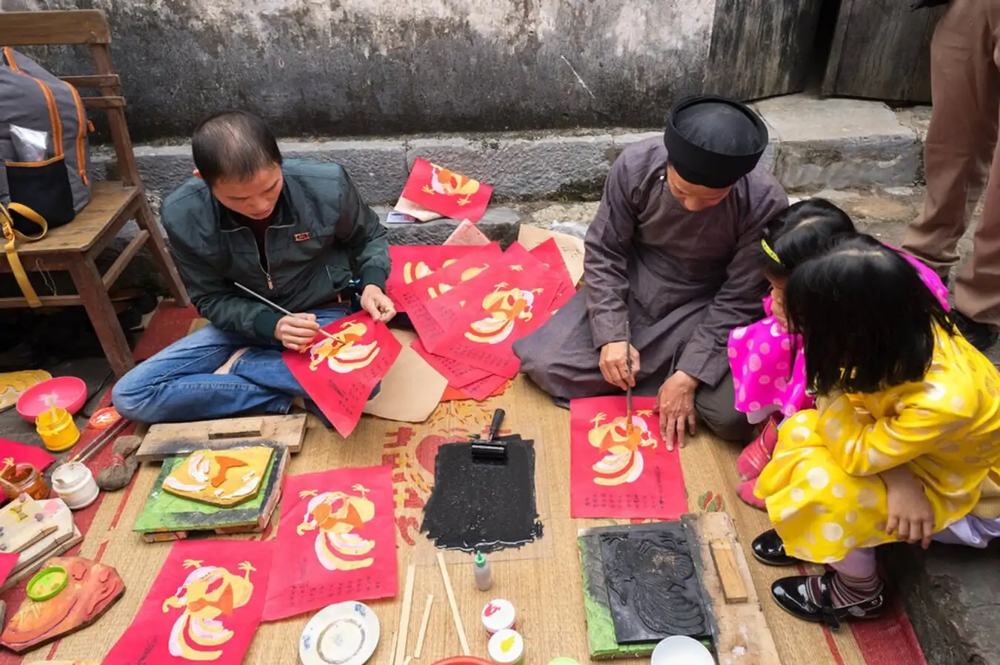
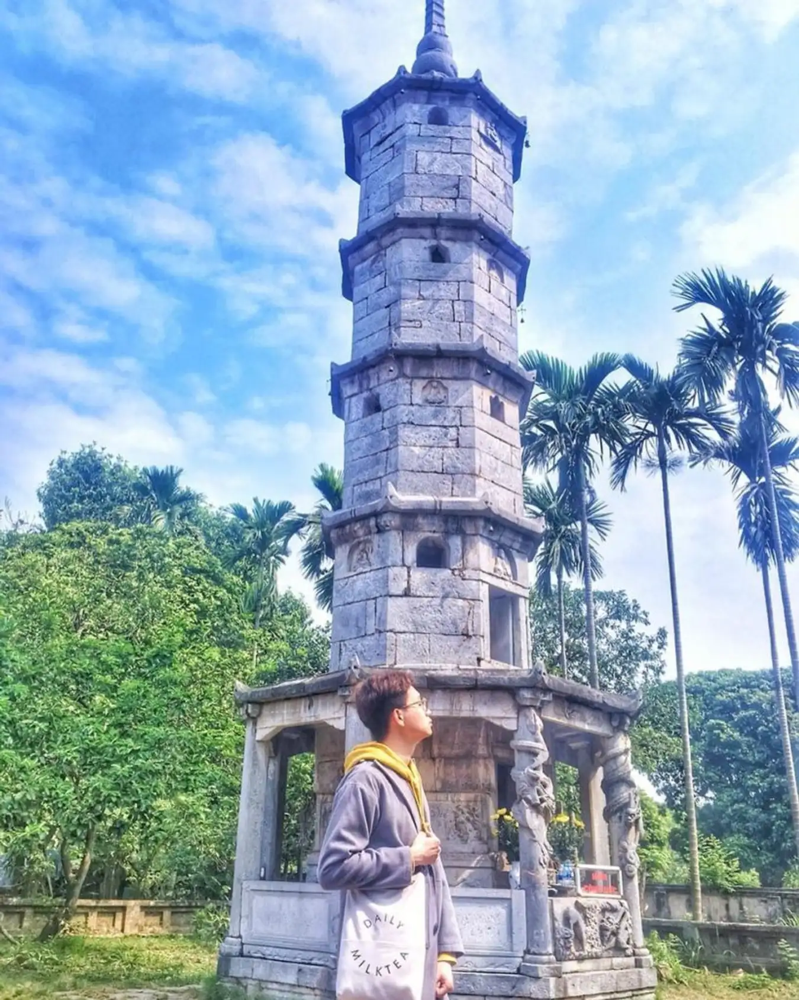
CHÙA BÚT THÁP
Địa điểm check in đẹp ở Bắc Ninh thu hút nhiều du khách ghé thăm và chụp ảnh phải kể đến là Chùa Bút Tháp, nằm bên đê hữu ngạn sông Đuống, thôn Bút Tháp, xã Đình Tổ, huyện Thuận Thành, tỉnh Bắc Ninh.
Nằm bên bờ sông Đuống ngôi chùa khá cổ kính, cộng với khung cảnh đồng quê hữu tình, đến đây bạn sẽ cảm nhận được sự thanh tịnh và bình yên. Với những kiến trúc độc đáo của chùa tạo nên vẻ đẹp trang nghiêm, mộc mạc, nếu bạn đang tìm kiếm một địa điểm du lịch tâm linh thì chắc chắn đây sẽ là lựa chọn hoàn hảo khi bạn đến Bắc Ninh.
Biểu tượng của chùa là tháp Báo Nghiêm nghiêng nghiêng, nằm hiên ngang giữa trời đất, đây là biểu tượng được du khách check in nhiều nhất. Ngoài ra, trong chùa còn sở hữu những tượng phật bằng gỗ thật độc đáo, đáng chiêm ngưỡng.
CHÙA PHẬT TÍCH
Nằm tại xã Phật Tích huyện Tiên Du, Chùa Phật Tích là nơi có tín ngưỡng dân gian Việt Nam kết hợp với phật giáo Ấn Độ. Nơi đây được xây dựng vào năm Thái Bình thứ 4 (1057), với kiến trúc cổ kính và lịch sử hình thành ấn tượng.
Ngôi Bảo Tháp tại chùa là một điểm nhấn đặc sắc mà bất cứ du khách nào khi đến chùa Phật Tích cũng tham quan khám phá và chụp ảnh. Là một địa điểm linh thiêng thu hút nhiều du khách đến viếng thăm và cầu nguyện.
Vào những ngày lễ hội đặc biệt là lễ hội Bảo Tháp diễn ra từ mùng 3 đến mùng 5 Tết Nguyên Đán thu hút đến hàng chục nghìn du khách ghé thăm và tham gia lễ hội.
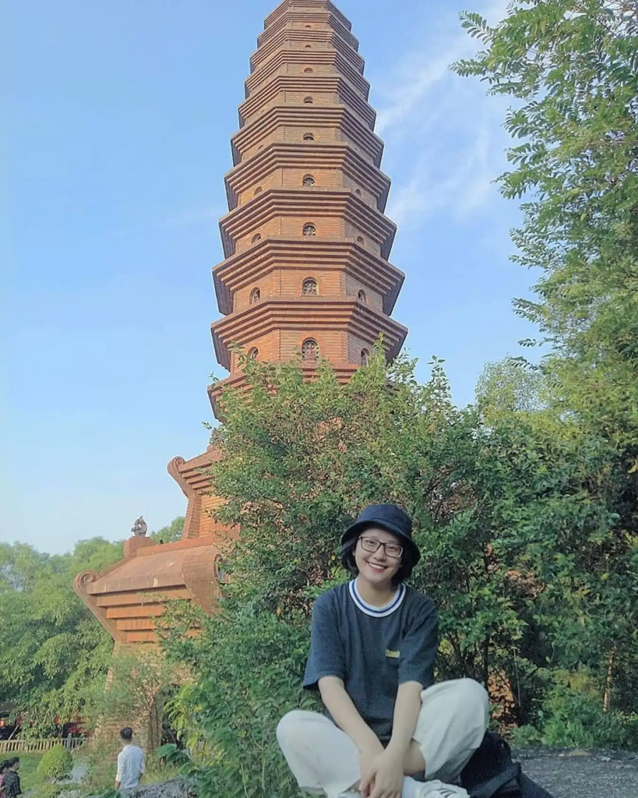
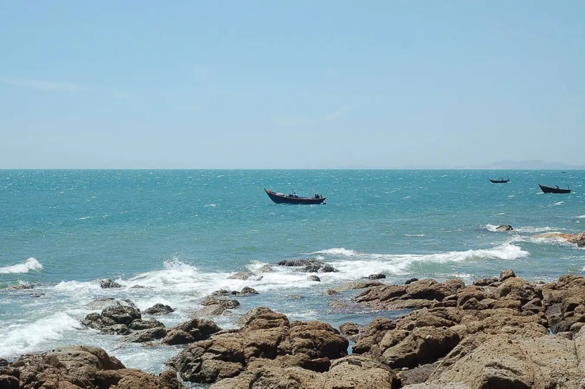
LÀNG GỐM PHÙ LÃNG
Thêm một làng nghề truyền thống tại Bắc Ninh nổi tiếng là Làng gốm Phù Lãng, nằm tại huyện Quế Võ, nằm cạnh bờ sông Cầu, nếu bạn là một người yêu nghệ thuật và yêu thích những góc check in độc đáo, thì đây sẽ là địa điểm du lịch Bắc Ninh mà bạn chớ bỏ qua.
Tại đây với khung cảnh thiên nhiên, đồi núi, đồng lúa cực thơ mộng và hữu tình, bạn sẽ được tận hưởng không gian trong lành, bình yên. Và hơn hết còn được tìm hiểu quy trình sản xuất ra các sản phẩm gốm sứ như chậu cảnh, chén đĩa, nồi,… tại làng gốm Phù Lãng.
NHÀ THỜ CHÁNH TÒA BẮC NINH
Địa điểm check in tiếp theo bài viết muốn giới thiệu cho bạn là nhà thờ Chánh Toà, đây là một địa điểm thu hút đông đảo lượng du khách đến tham quan và chụp ảnh bởi lối kiến trúc độc đáo, theo lối Baroque của nước Ý.
Đến đây bạn sẽ được ngắm nhìn một nhà thờ cổ kính được xây dựng vào thế kỉ XVI, qua cả một thế kỷ nhà thờ ấy vẫn còn hiên ngang, giữ được nét nguyên sơ ban đầu, tiếng chuông vẫn vang vọng đều đặn. Là nơi của nhiều con chiên đến cầu nguyện, không thể thiếu trong đời sống tín ngưỡng hằng ngày.
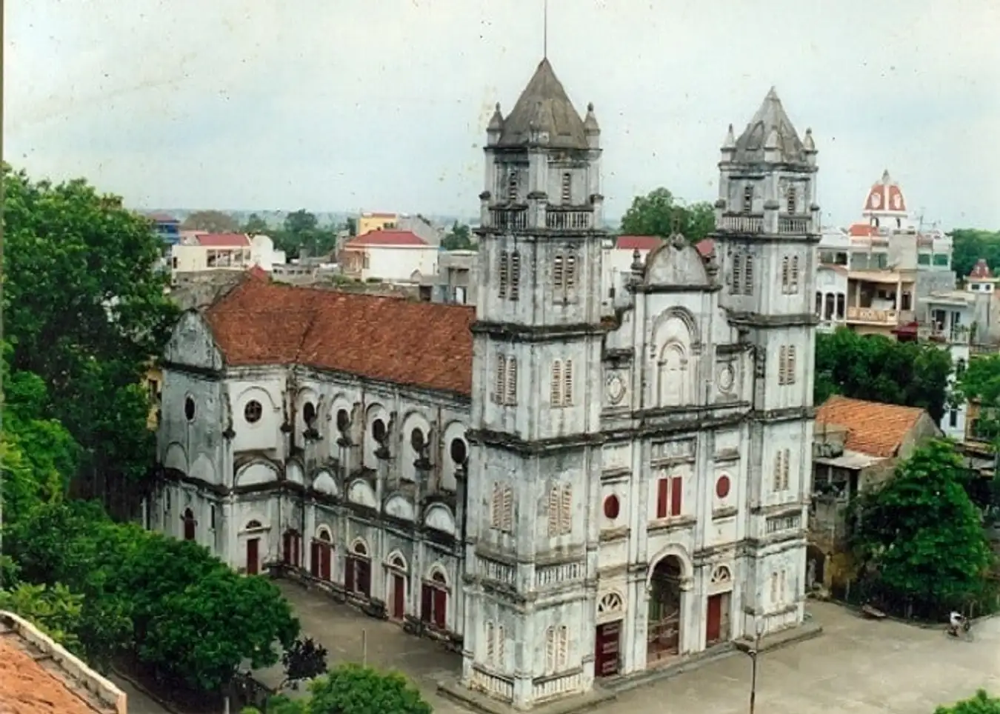
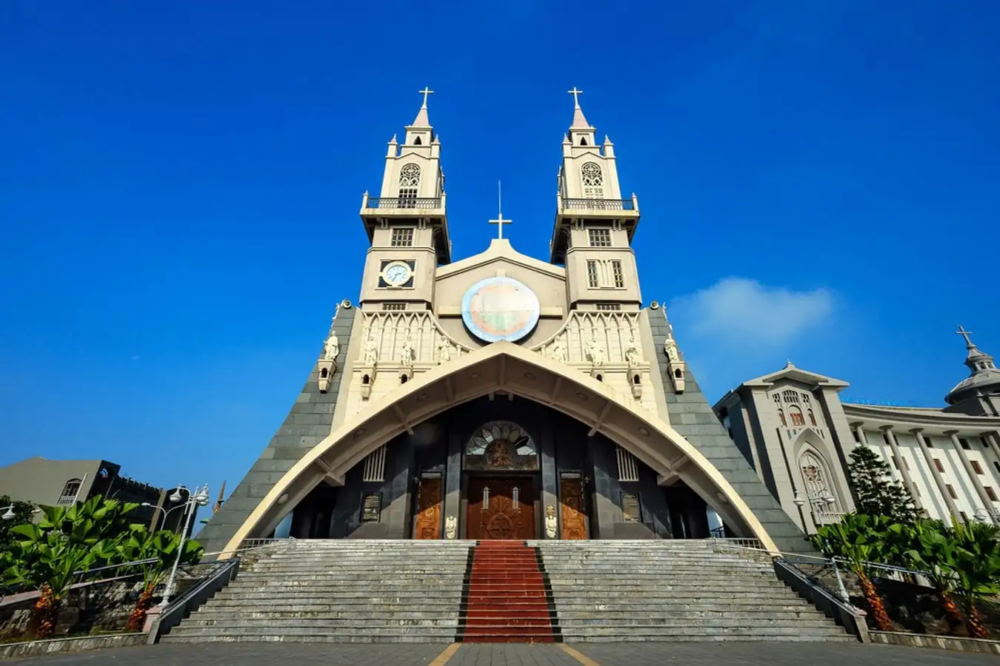
NHÀ THỜ CHÍNH TÒA
Nếu đã đến Thái Bình thì bạn chớ ngần ngại mà hãy đến tham quan ngôi chùa có lối kiến trúc đẹp, ấn tượng nhất tại Việt Nam. Khuôn viên nhà thờ mang lại không gian thoáng mát và bên trong là công trình kiến trúc mang đậm chất tôn giáo. Là một nhà thờ còn trẻ tuổi nhưng nơi đây lại là một trong những địa điểm check-in Thái Bình được nhiều người biết đến.
Địa chỉ nhà thờ Chính Tòa: Số 8 đường Trần Hưng Đạo, phường Lê Hồng Phong, thành phố Thái Bình.
ĐỀN BÀ CHÚA KHO
Là một địa điểm hành hương của nhiều du khách, cũng là một di tích lịch sử quý giá nằm tại làng Cổ Mễ, phường Vũ Ninh thành phố Bắc Ninh. Đền Bà Chúa Kho nổi tiếng là một nơi linh thiêng và sở hữu những bảo vật quý hiếm, cổ xưa.
Đây là nơi tưởng nhớ người phụ nữ Việt Nam đã có công lớn trong việc tổ chức sản xuất, phụ giúp triều đình quản lý kho lương thực, tại đây bà bị giết trong một cuộc chiến. Đền Bà Chúa Kho được xây dựng để thờ cúng và tôn vinh bà.
Đến đây du khách sẽ được chiêm ngưỡng kiến trúc độc đáo, tìm hiểu thêm về lịch sử văn hoá dân tộc và có những bức ảnh check in thật đẹp.

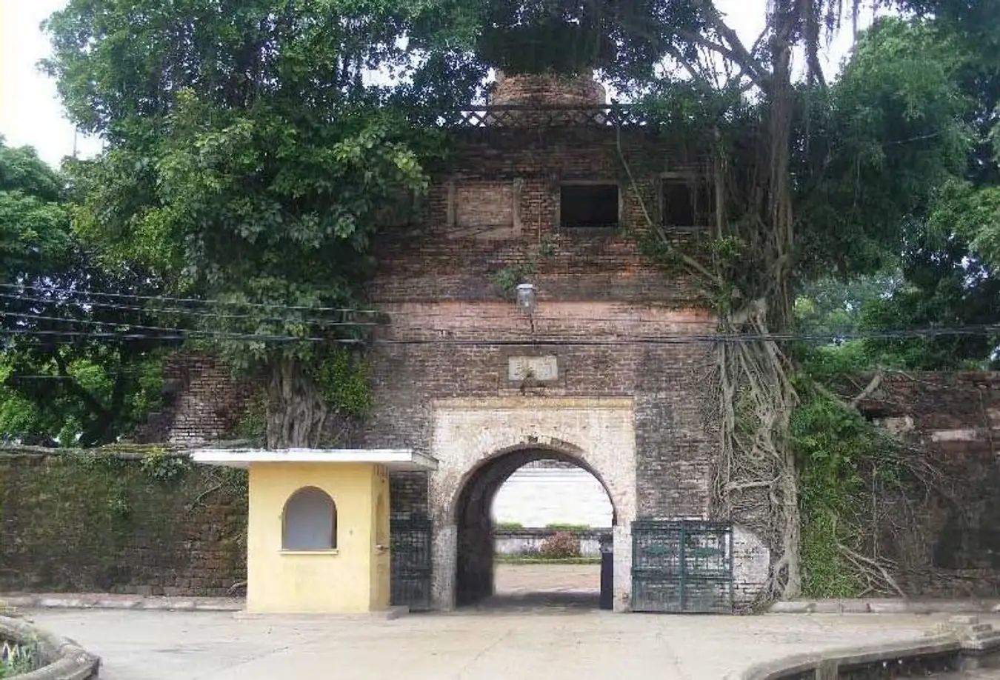
THÀNH CỔ BẮC NINH
Thành cổ Bắc Ninh là một địa điểm check in đẹp ở Bắc Ninh, nằm ở Phường Vệ An, thành phố Bắc Ninh nơi có những kiến trúc đặc trưng với mái nhà cong cong, thành cổ sừng sững, cây đa giếng nước, thành cổ còn được ví là một trong những lâu đài đẹp nhất miền Bắc.
Được xây dựng theo bình đồ hình lục giác, với kích thước lâu đài là 532 mét, 3 mét và 2 mét. Thành cổ sừng sững oai nghiêm được phòng thủ nghiêm ngặt, nơi đây có đài phát thanh, kho thuốc súng, và các pháo đài nhô ra bên ngoài, đây là những góc giúp bạn có những bức ảnh thật chất.
Ẩm thực
BÁNH TRO ĐÌNH TỔ
Không chỉ có tương Đình Tổ mà bánh tro Đình Tổ cũng rất nổi tiếng ở Bắc Ninh nhờ hương vị thơm ngon. Bánh được làm từ gạo nếp, nước tro, gói trong lá chuối hay lá dong và có thêm mật mía nên có màu vàng nâu đẹp mắt. Khi ăn bạn sẽ cảm nhận được bánh mềm, vị ngọt thơm lừng, hấp dẫn.
Giá tham khảo: Khoảng 3000 - 5000 đồng/ cái.
Địa chỉ tham khảo: Chợ Hòa Đình - Nguyễn Văn Cừ, Võ Cường, Bắc Ninh
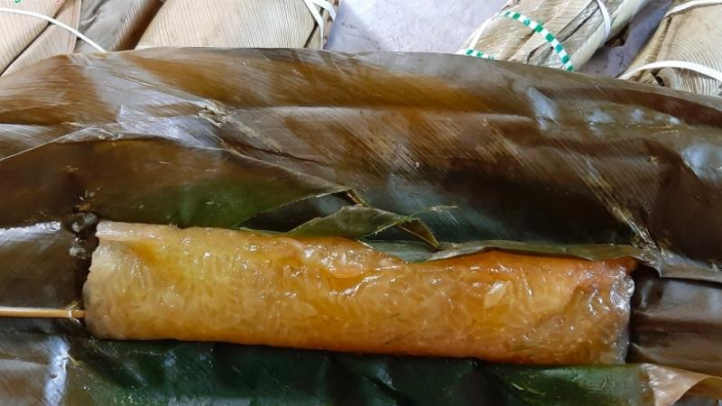
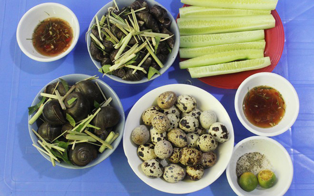
ỐC PHÙ LƯU
Một món ăn đặc sản nữa mà bạn không nên bỏ qua khi có dịp ghé thăm Bắc Ninh đó là món ốc Phù Lưu.
Món ăn này cực gây nghiện cho những tín đồ mê ăn ốc. Được biết, làng Phù Lưu, xã Từ Sơn là nơi có nhiều quán ốc ngon quên lối về mà bạn có thể ghé qua thường thức.
Ốc được chế biến sạch sẽ, tươi ngon, khi đem hấp ăn kèm với nước chấm ốc đặc trưng, lạ miệng sẽ khiến bạn mê mẩn ngay từ lần đầu thưởng thức.
Giá tham khảo: Khoảng 20.000 - 80.000 đồng.
Địa chỉ tham khảo: Làng Phù Lưu, phường Đông Ngàn, thị xã Từ Sơn, tỉnh Bắc Ninh
BÁNH TẺ LÀNG CHỜ
Bánh tẻ là loại bánh truyền thống ở vùng đồng bằng Bắc Bộ và tiêu biểu ở làng Chờ - Bắc Ninh.
Bánh được làm từ bột gạo tẻ, gói ngoài bằng lá dong. Bánh có lớp vỏ ngoài dẻo dẻo, dai dai, mềm ngon mà không quá nhão. Một chiếc bánh nóng hổi sẽ làm siêu lòng bất cứ vị khách nào.
Giá tham khảo: Khoảng 50.000 - 60.000 đồng/ chục.
Địa chỉ tham khảo: Cửa hàng bánh tẻ làng Chờ Bình Ngọc - Thị trấn Chờ, Yên Phong, Bắc Ninh.
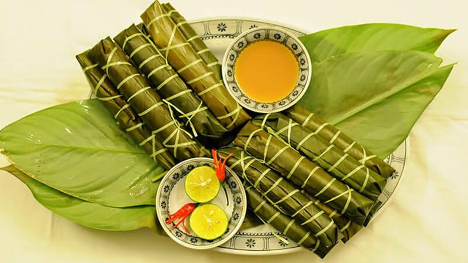
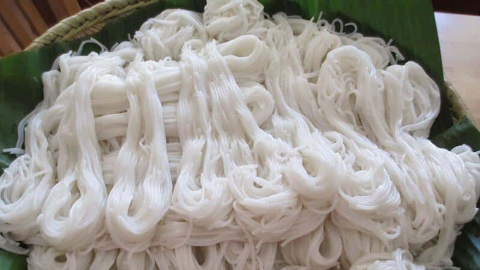
BÚN LÀNG TIỀN
Bún làng Tiền thuộc xã Khắc Niệm nức tiếng gần xa bởi làng nghề làm bún này có từ hàng trăm năm trước và được truyền lại đời này sang đời khác.
Những sợi bún trắng trong, tươi ngon và dẻo dai được người dân làng Tiền thực hiện qua biết bao công đoạn phức tạp, tỉ mỉ và công phu. Có thể nói rằng, bún làng Tiền đã góp phần không nhỏ trong việc tạo nên thiên đường của các món bún trong nét ẩm thực đặc trưng Việt Nam.
Giá tham khảo: Khoảng 20.000 đồng - 30.000 đồng/ 1kg.
Địa chỉ tham khảo: Chợ Hòa Đình - Nguyễn Văn Cừ, Võ Cường, Bắc Ninh.
CHÁO CÁ TÍCH NGHI
Cháo cá Tích Nghi là món ăn quen thuộc không chỉ của người dân xứ Kinh bắc mà còn của khách du lịch khắp nơi đến thăm Bắc Ninh.
Bên dưới cháo thường được cho vào một ít rau thơm, nhiệt độ của cháo vừa đủ làm cho rau chín tới mà không quá mềm nhũng. Cháo cá nơi đây được nấu từ thịt cá chép hoặc cá trắm, cá đặc biệt dai ngon và ngọt thịt.
Giá tham khảo: Khoảng 20.000 - 55.000 đồng/ tô.
Địa chỉ tham khảo:
-Quán cháo cá chép ông Duẩn - 94 Thành Bắc, Phường Ninh Xá, Bắc Ninh
-Quán cháo cá Chín Mười - 35 Đường Thiên Đức, Phường Vệ An, Bắc Ninh
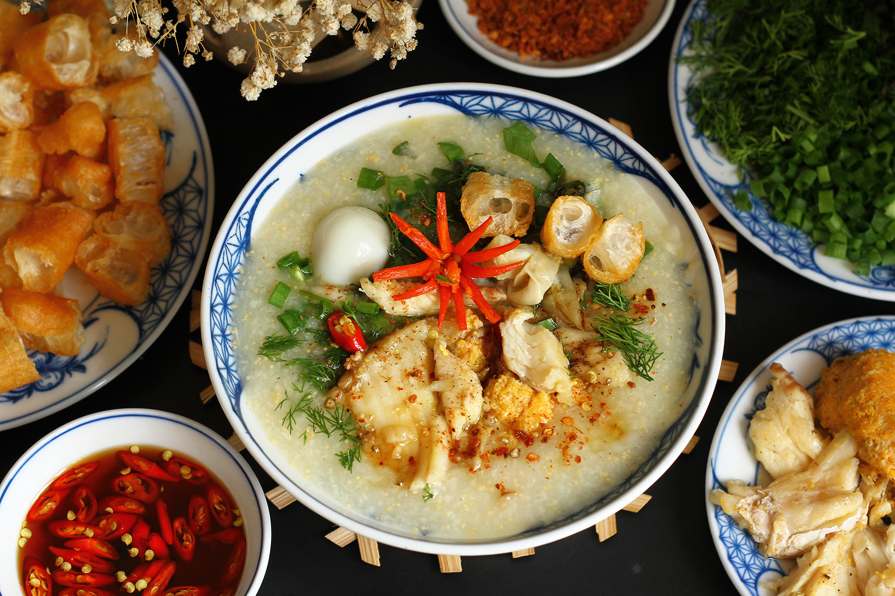
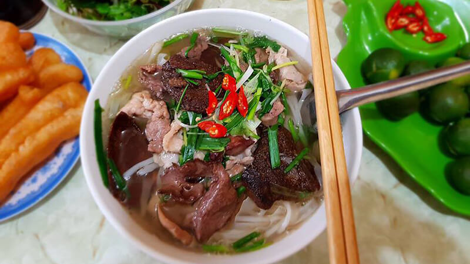
PHỞ GAN CHÁY
Nếu đã từng thưởng thức một tô phở gan cháy chắc chắn bạn sẽ không thể nào quên được món phở độc đáo này.
Điểm đặc biệt nhất là miếng gan được tẩm ướp kỹ càng, đem áp chảo thơm giòn để ăn cùng phở. Nước dùng của món được chế biến rất công phu, vì vậy khi ăn thực khách sẽ cảm nhận được sự thơm béo đặc trưng mà chỉ có món phở gan cháy gốc tại Bắc Ninh mới có.
Giá tham khảo: Khoảng 30.000 - 50.000 đồng/ tô.
Địa chỉ tham khảo:
- Quán phở gan cháy Đáp Cầu - 91 Đấu Mã, Phường Thị Cầu, Bắc Ninh
- Quán phở gan cháy Đáp Cầu Vĩnh Xương - 82 Trần Lựu, Phường Thị Cầu, Bắc Ninh
Hoạt động
LỄ HỘI RƯỚC PHÁO LÀNG ĐỒNG KỴ
Lễ hội này được bắt đầu từ sáng sớm ngày 3 tết hàng năm tại thôn Đồng Kỵ. Ngôi làng nghề truyền thống giàu có nhất vùng Bắc Ninh nhằm tưởng nhớ vị Thiên Cương – người được tôn thờ là Thành Hoàng Làng.
Trong nghi lễ rước pháo, hai quả pháo lớn, sơn màu đen dát vàng và được trang trí hình tứ linh được các thanh niên rước từ nhà truyền thống ra đình làng. Đội rước pháo được tuyển chọn là các thanh niên ưu tú trong làng, nhà nào có con tham gia đội rước pháo được coi là vinh dự. Theo sau đội rước là đoàn rước hàng trăm người gồm các bô lão, chức sắc cùng người dân trong làng. Lễ rước được tổ chức tôn nghiêm, hoành tráng.
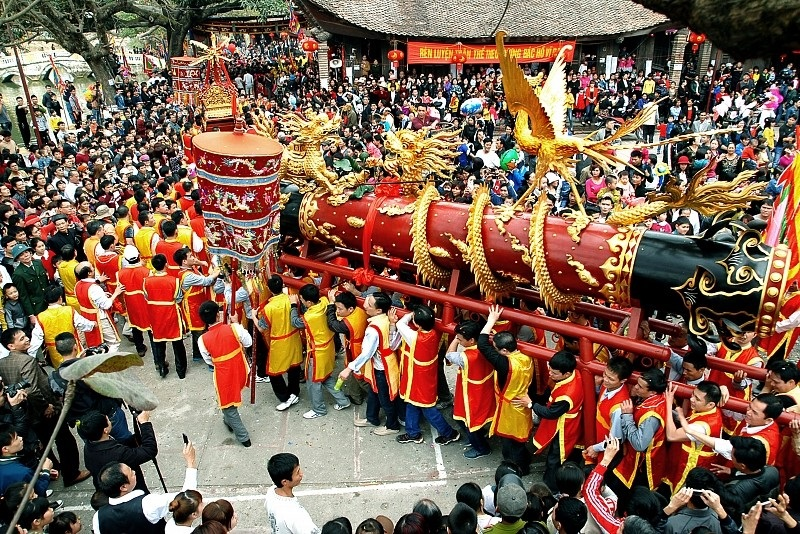
Hoạt động
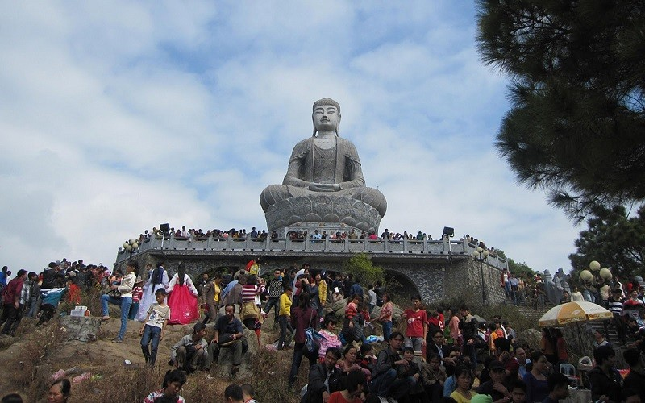
LỄ HỘI CHÙA PHẬT TÍCH
Lễ hội chùa Phật Tích còn được gọi là Khán hoa mẫu đơn thường diễn ra vào ngày 3 – 5/1 âm lịch hàng năm. Chùa Phật Tích nằm trên địa bàn huyện Tiên Du của Tỉnh Bắc Ninh. Hàng năm lễ hội đón số lượng rất lớn du khách các nơi về dâng hương, chảy hội. Mọi người đến hội để cầu mong may mắn, tài lộc, sức khỏe và tham dự các trò chơi dân gian độc đáo.
Đi hội chùa Phật Tích khách thập phương không chỉ được dự hội Khán hoa mẫu đơn mà còn có cơ hội du ngoạn những di tích đẹp. Vẫn còn đó tượng Phật A di đà bằng đá xanh hàng ngàn năm tuổi trong vị thế là một báu vật quốc gia. Tượng chim gandhura đầu người mình chim cho thấy dấu ấn của văn hoá Chăm – pa. Hàng linh thú bằng đá gốm sư tử, voi, tê giác, trâu, ngựa và những chạm khắc trên các chân tảng, những di vật còn lại của ngôi chùa cổ xưa cho thấy dáng dấp thâm nghiêm của văn hoá cung đình.
Lễ hội chùa Phật Tích bao gồm các nghi thức phần lễ và chương trình văn nghệ, trò chơi phần hội. Nơi đây có bức tượng Đại Phật tượng lớn nhất Việt Nam và được công nhận là di tích lịch sử cấp quốc gia năm 2002.
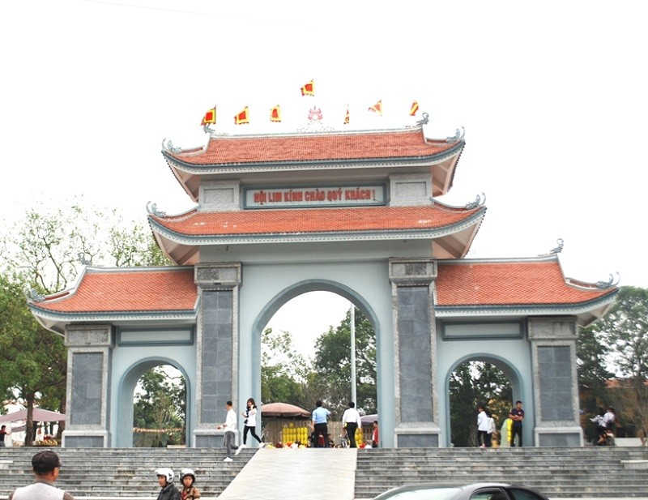
THỨ BA LÀ HỘI LIM
Đây là lễ hội truyền thống và lớn nhất trong năm của tỉnh Bắc Ninh. Hội diễn ra vào ngày 13 tháng giêng âm lịch hàng năm tại huyện Tiên Du. Lễ hội Lim được đông đảo du khách thập phương biết tới và cũng là niềm tự hào của người dân địa phương.
Lễ hội lim gồm phần nghi lễ trang nghiêm cùng các hoạt động tín ngưỡng tâm linh. Nhằm thể hiện sự thành kính của con cháu đời sau với vị tổ của làn điệu quan họ. Phần hội thu hút đông đảo sự quan tâm của du khách bởi những trò chơi đậm chất dân gian như: nấu cơm, đấu vật, cờ vua, đánh đu, chọi gà…Trong đó nổi bật là phần hát quan họ giữa các liền anh, liền chị. Những giai điệu dân ca trữ tình ngọt ngào luôn được đông đảo khán giả chờ đợi. Xưa kia hội Lim còn là dịp để các đôi nam thanh, nữ tú trong vùng kết bạn se duyên với nhau. Ngày nay, lễ hội trở thành điểm du xuân đầu năm cầu may mắn của du khách thập phương.
Hội Lim không chỉ là niềm tự hào của nhân dân vùng Lim mà đã trở thành sinh hoạt đậm nét Bắc Ninh – Kinh Bắc. Nhắc đến hội Lim, người ta nhớ ngay đến một Bắc Ninh đằm mình trong những làn điệu Quan họ mượt mà, tình nghĩa. Khách thập phương tìm về hội Lim để được nghe hát Quan họ và tìm hiểu về sinh hoạt văn hoá Quan họ ở một lễ hội mang quy mô vùng miền.
THỨ BA LÀ HỘI LIM
Đây là lễ hội truyền thống và lớn nhất trong năm của tỉnh Bắc Ninh. Hội diễn ra vào ngày 13 tháng giêng âm lịch hàng năm tại huyện Tiên Du. Lễ hội Lim được đông đảo du khách thập phương biết tới và cũng là niềm tự hào của người dân địa phương.
Lễ hội lim gồm phần nghi lễ trang nghiêm cùng các hoạt động tín ngưỡng tâm linh. Nhằm thể hiện sự thành kính của con cháu đời sau với vị tổ của làn điệu quan họ. Phần hội thu hút đông đảo sự quan tâm của du khách bởi những trò chơi đậm chất dân gian như: nấu cơm, đấu vật, cờ vua, đánh đu, chọi gà…Trong đó nổi bật là phần hát quan họ giữa các liền anh, liền chị. Những giai điệu dân ca trữ tình ngọt ngào luôn được đông đảo khán giả chờ đợi. Xưa kia hội Lim còn là dịp để các đôi nam thanh, nữ tú trong vùng kết bạn se duyên với nhau. Ngày nay, lễ hội trở thành điểm du xuân đầu năm cầu may mắn của du khách thập phương.
Hội Lim không chỉ là niềm tự hào của nhân dân vùng Lim mà đã trở thành sinh hoạt đậm nét Bắc Ninh – Kinh Bắc. Nhắc đến hội Lim, người ta nhớ ngay đến một Bắc Ninh đằm mình trong những làn điệu Quan họ mượt mà, tình nghĩa. Khách thập phương tìm về hội Lim để được nghe hát Quan họ và tìm hiểu về sinh hoạt văn hoá Quan họ ở một lễ hội mang quy mô vùng miền.
LỄ HỘI CHÙA DÂU
Lễ hội được tổ chức vào ngày 6 tháng 4 âm lịch hàng năm, đây là ngày sinh của Phật tổ Thích Ca Mâu Ni, lễ hội được tổ chức vừa tưởng nhớ công ơn của đức phật vừà mang ý nghĩa cầu mong mưa thuận gió hòa, mùa màng bội thu.
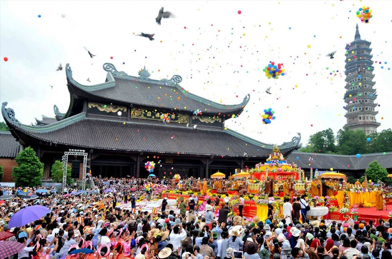
Chùa Dâu còn được biết đến với tên Diên Ứng, Pháp Vân hay Cổ Châu thuộc huyện Thuận Thành. Ngôi chùa còn lưu giữ nhiều công trình kiến trúc cổ như thành cổ Luy Lâu, lăng mộ Sĩ Tiếp với hệ thống chùa chiền, đền đài, bảo tháp cổ đẹp. Trong lễ hội có các hoạt động vô cùng đặc sắc như: cướp nước, dâng nước, đánh gậy trên bãi chùa Dâu, múa sư tử…Lễ hội chùa Dâu trở thành nét đẹp văn hóa lễ hội của vùng Kinh Bắc xưa. Lễ hội không chỉ để ôn lại truyền thống, phong tục mà còn khích lệ tinh thần đoàn kết trong việc giữ gìn và bảo tồn giá trị văn hóa. Chùa Dâu còn là một địa điểm du lịch tâm linh quan trọng của người Việt Nam.Di chuyển
Du lịch Bắc Ninh, các bạn có nhiều phương tiện đi lại như Taxi, xe buýt, xe ôm, đi thuyền. Dịch vụ xe buýt ở Bắc Ninh khá đa dạng, nhiều chuyến chủ yếu trong thành phố đi một số huyện, chủ yếu phục vụ dân địa phương, công nhân, học sinh .